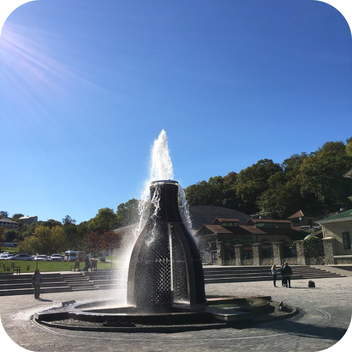
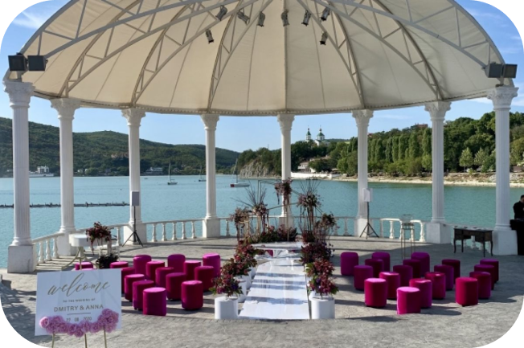
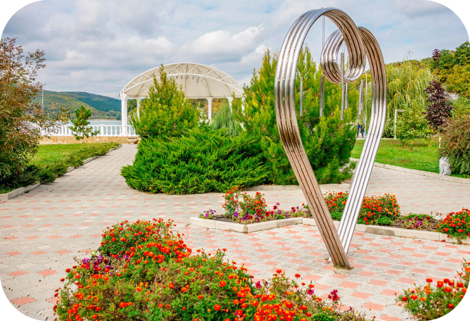
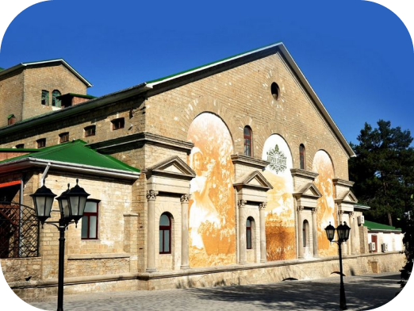
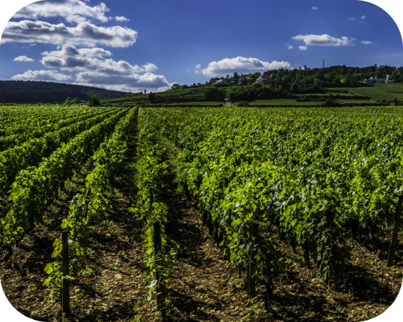
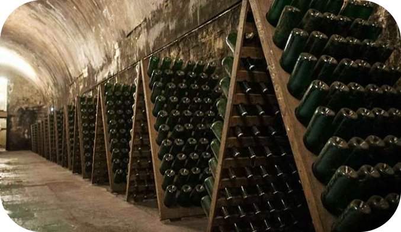

Фонтан «Царь-бутылка» является визитной карточкой поселка. Пятиметровая инсталляция расположена на Александровской площади и почти всегда окружена туристами. Особенностью скульптуры является то, что она выполнена из пустых бутылок из-под шампанского.
Всего на изготовление объекта ушло 1954 бутылки.Бутылка расположена в центре круглого постамента, по которому можно зайти внутрь фонтана. В этот момент посетителя окатят брызги воды, но такой своеобразный способ освежиться пользуется популярностью в жаркую погоду. Вечером включается неоновая подсветка, которая делает фонтан еще ярче и необычнее.
Амфитеатр в Абрау-Дюрсо — один из наиболее интересных памятников архитектуры Южного Кавказа. Этот проект реализовал знаменитый российский архитектор Андрей Иванов.
Из-за расположения на берегу Краснодарского края, амфитеатр в Абрау-Дюрсо находится очень близко к многим курортным городам России. В то же время, его положение, вдали от шума и суеты, позволяет насладиться неповторимой атмосферой и расслабиться. Амфитеатр в Абрау-Дюрсо стоит посетить не только по причине его великолепной архитектуры, но и потому, что здесь всех ждут концерты, церемонии награждения, вечеринки и свадьбы
Арт-парк в Абрау-Дюрсо является одним из самых известных туристических объектов региона. Это уникальное место создало настоящий бум в культурной жизни Краснодарского края.
Изначально, это было маленькое местечко, где жители могли отдохнуть и насладиться красивой природой. Но, благодаря инициативе и творческому подходу организаторов, это место стало настоящим центром культурной жизни Южного региона. Арт-парк представляет собой большую территорию, на которой расположены открытые галереи, скульптуры и другие художественные объекты. Это место зарядит энергией и вдохновением каждого его посетителя.
И, наконец, расскажем вам о самой известной части данного места. В живописном месте посреди гор расположился древний, но здравствующий российский завод по изготовлению вин — Абрау-Дюрсо. Это место буквально создано для туристического путешествия, которое не оставит никого равнодушным. Перед вами открывается вид на маленькое, но величественное озеро Абрау. Кроме водной глади, взору представляются горы и плантации винограда, захватывающие дух и воображение.
Рядом располагаются такие известные южные города, как Новороссийск и Анапа. Считается, что название пошло от населенных пунктов «Абрау» и «Дюрсо», которые в свою очередь получили от протекающих рядом рек с таким же названием.
История знаменитейшего российского виноградного хозяйства началась в 1870 году, когда Министерство Императорского Двора и Уделов приобрело участок земли для государственных нужд, но никак не для выращивания винограда. В 1874 году чешский виноградарь Франц Йозефович Гейдук привез с собой и затем разместил на этом участке около 20 000 лоз винограда сорта рислинг за свой собственный счет.
Виноград прижился и дал отличный урожай, с которым местные власти попросту не знали, что делать. В тот момент Ф. И. Гейдук принимает решение о скупке всего урожая, с последующем производством вина на своем хуторе. Вскоре Гейдук принимает похвалы, аплодисменты и признание своего вина от крупных и искусных производителей того времени.
Это послужило предоставлению официального разрешения проведения винодельческой деятельности от властей местного имения на их территории. Вскоре, появились марочные вина «Рислинг» и Каберне Абрау.
В 1891 году на должность управляющего удельным виноделом назначается граф Лев Сергеевич Галицин. Под его управлением наступает значительный подъем производства виноградных вин. При нем было построено пять подвалов, в каждом из которых хранились по более 10 000 ведер этого прекрасного напитка.
По приглашению князя Галицина, в виноградник прибывали французские винные специалисты, которые оказали поддержку по строительству тоннелей, которые принесли хозяйству 16 000 бутылок вина, а первое шампанское вышло в 1898 году.